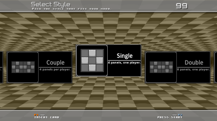
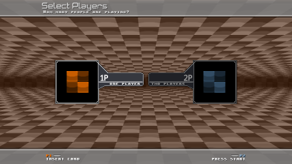
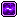

Introduction
StepMania 5 Tournament Edition is a modified version of StepMania 5, primarily targeted at people who care about scoring. Currently, this product is not finished and must be considered development-quality. Not everything that has been planned for SM5TE has been implemented yet. It should be stable for the most part, however, so please use it and report back to me with your issues and feedback.
Table of Contents
- Features
- Future Plans
- Requirements
- Getting Started
- Options
- SM5TE Interface
- Advanced Features
- Troubleshooting
- Credits
Features
So what makes StepMania 5 Tournament Edition different from the normal StepMania 5?
- Default scoring type is now MIGS (Marvelous Incorporated Grading System). This means Marvelous/W1 is forced on.
- Judge and Life levels below 4 were removed.
- Various unnecessary preferences and features (e.g. Announcers, MonkeyInput, CoinMode_Pay, dancing characters, battle/rave modes, autogen steps) were removed.
- Rarely-used game modes (
ez2,ds3ddx) were removed. - Tweaking of various gameplay parameters to be more consistent with StepMania 3.9's gameplay.
Future Plans
SM5TE is being developed in multiple phases. This means there are features planned that aren't implemented in the current version.
Phase 1 - Gameplay Test
Previous versions of StepMania 5 (and sm-ssc) weren't focused that much on gameplay. Since SM5TE is a player-based build, gameplay is the first priority. The first phase is meant to be a test of gameplay, to see what problems and suggestions come up. Upon acceptance of StepMania 5 TE's gameplay as it pertains to legit scoring and general gameplay experience, the next phase can be worked on.
Phase 2 - Online Scoreboard
Once scores from SM5TE are legit, we can start ranking people. Ideally, there would be an online leaderboard viewable in both a web browser and in-game. This would require a song database, however... Work on the Data menu will finally begin in this phase. This is also a good place for the development of Rivals and Replay Data. Course mode will be re-enabled as well.
Phase 3 - Online Gameplay
You may have heard freem complain that the current StepMania online code is old and needs an overhaul. Phase 3 will be all about the creation of a new online protocol and server, with enhanced client capabilities. The plans for this are even less defined than the online scoreboard.
Other Features
There are other planned features that aren't particularly dependant on any of the phases listed above.
- New ScreenMapControllers - The current controller mapping screen is pretty awkward. This also allows for a redefinition of the input system entirely.
- New ScreenSelectGame - The current ScreenSelectGame is bland; just an options menu. It should at least tell you what styles are playable.
- In-Game CustomSpeedMods Editor - because let's face it, I hate Windows 7.
- Disqualification - DQ is being forced on for the initial release. Based on feedback and future plans, this may become user-configurable, or disqualification would happen on submission to the leaderboard.
- Theme - The default SM5TE was designed to be utilitarian and to test the design sketched out in late 2011. It is subject to change, and commentary is welcome.
- and other ideas that aren't being divulged yet...
The future of StepMania 5 Tournament Edition is in your hands. Shape it wisely.
Requirements
StepMania 5 Tournament Edition is currently only available for Microsoft Windows. Other requirements include:
- A video card capable of DirectX 8 or OpenGL
- A sound card
- An input device of some kind (keyboard, controller, etc.)
Getting Started
Note: This guide assumes you are already familiar with StepMania and have at least one (non-SM5TE) version installed.
Pre-First Run Checks
Before you run the game for the first time, there are a few things you should know about.
Portable Mode
If you dislike how StepMania 5 TE places all the data in your %APPDATA% folder,
make a blank file called Portable.ini in the folder where you installed
StepMania 5 Tournament Edition. This will create a structure similar to StepMania 3.9,
where all the folders were in the StepMania install directory.
Speed Mods
With the advanced theming features of StepMania 5, players are no longer forced
to edit the metrics (and languages) just to add speed mods. The relevant files
will be created on the first run of the game. Look for SpeedMods.txt
in the various profile folders in /Save/. The Machine Profile's
speed mods are shared between all players, and the local player's speed mods
are added on top of them.
Sharing Songs Between StepMania Installs
If you already know about AdditionalSongFolders, then there you go.
If you didn't already know about AdditionalSongFolders, it's a preference
in Preferences.ini that allows StepMania to load extra song directories
on top of the local /Songs/ folder and any Packages. Point it to your song folders.
Here's an example: AdditionalSongFolders=D:/StepMania 4/Songs/,F:/_stepm/Songs
Options
On the Title Menu, select "Options" to configure various game options.
Program Options
This is where program-wide options live.
- Language - Change the current language.
- Theme - Change the current theme.
- Translations - Toggles the display of songs between Native and Transliterated.
- Fast Load - If enabled, songs won't be checked for changes on loading.
- Easter Eggs - Toggles the display of some easter eggs (Toasty).
Game Options
As this is one of the most important sections, it's been split into two parts to facilitate quicker editing (hopefully.)
Game System Options
These options have to do with how the game plays.
- Judge Difficulty - Judges 4 through 8 plus Justice.
- Life Difficulty - Judge Scale, where 1.0 is supposed to be the equivalent of 4 from StepMania 3.9, but people complain that it's not hard enough.
- Scoring Mode - The only scoring mode available in StepMania 5 Tournament Edition is MIGS (Marvelous Incorporated Grading System).
- Percentage Scoring - Toggles display of Percent Score on Gameplay screen.
- Auto Set Style - If enabled, allows players to change between the various styles of the current game automatically.
- Allow Extra Stage - When Event Mode is disabled (via other means), toggles the use of Extra Stages.
Game Display Options
These options change various display-related things on ScreenGameplay.
- Default Noteskin - Set the default noteskin.
- Center 1 Player - Centers the notefield in one-player styles.
- Gameplay Footer - Choose between three different gameplay footer options.
- Lyrics - Toggles Lyrics display.
- Danger - Toggles Danger display.
- Oni Score Display - Toggles score display in Oni mode.
- Background Brightness - Changes the brightness of the background.
- Background Mode - (supposedly) Changes background display mode.
Input Options
Configure and test your mappings here.
Configure Input Mappings
At the moment, the old ScreenMapControllers is here. The plan is to replace the old ScreenMapControllers with a new, much better design.
Test Input
Slam on buttons and see if they work.
Other Input Options
- Automap Joysticks - Automatically map joysticks when plugged in. This will override manual mappings if enabled.
- Menu Buttons - Toggle the use of Gameplay and Menu buttons for menu navigation.
- Back Delayed - Decide if Back should instantly register or wait for half a second before registering.
- Options Navigation - Choose between Options Menu input types.
- Wheel Speed - Change the speed of the Music Wheel.
Menu Options
Technically this is ScreenSelectMusic options.
- Show Banners - Toggles display of banners.
- Wheel Sections - Toggles the dsplay of wheel sections. Does anyone use "Never" or "Title Only"?
- Show Song Options - Toggles the display of the Song Options menu.
Graphics/Sound Options
Options for changing the display and sound playback.
Display Options
- Display Mode - Toggle between Windowed and Full-Screen.
- Display Resolution - Change the resolution.
- Aspect Ratio - Change the aspect ratio.
- Display Color - Choose the window's color depth. May not work in windowed mode.
- Refresh Rate - Controls framerate. Only useful in full screen.
- Wait for VSync - Caps framerate to your monitor's refresh rate. Only useful in full screen.
- Visual Delay - Calibrate display lag manually.
- SmoothLines - Toggle anti-aliased lines on the Groove Radar.
- Show Stats - Toggles the display of rendering stats and skips.
A note about resolutions: StepMania is weird with them. The only things you need to pay attention to are the vertical height of the resolution and the aspect ratio. For instance, if your graphics card gives you options for 640x480 and 720x480 and you use 16:9 aspect ratio, the screen will be the same size with either option.
Texture Options
- Texture Resolution - Choose the maximum texture resolution. Values under 1024 will cause some blurry textures, but may increase frame rate
- Texture Color - Choose color depth for textures.
- Movie Color - Choose color depth for movies.
- High Res Textures - Toggle the use of high resolution textures.
- Keep Textures in Memory - Toggle the holding of textures in memory. Only use this if you have more than 128MB of RAM.
Sound Options
Audio options. Kind of important in a music game.
- Sound Volume - If you're a real pro, you'll set this to "Silent".
- Attack Sounds - Toggles sounds on attack activation.
- Mine Sounds - Toggles sounds on hit mines.
Calibrate Audio Sync
Use this if you want to interactively calibrate your global offset.
Manage Profiles
todo: write me
Reload Songs/Courses
Reloads your songs and courses. Useful if you've changed things.
SM5TE Interface
Assuming that you're using the SM5TE default theme ("StepMania 5 TE", sm5te), this
guide will run you through the interface.
Select Style/Number of Players
Depending on the value of Auto Set Style, you will see one of two screens.
|  With Auto Set Style Off |
 With Auto Set Style On |
Each of the screens is meant to address the number of players. In the case of the style selection screen, you are locked to playing that specific style. However, if Auto Set Style is turned on, you will see the number of players screen, and can switch between styles freely.
Select Music
Timing Icons
The icons that appear between the stats frame and the banner frame let you know if any specific Segments are being used.
| Stops - The chart will stop scrolling after the arrow is judged. | |
| Delays - The chart will stop scrolling before the arrow is judged. | |
|  | Warps - The chart will jump to another section. Popularized back in StepMania 3.9 via negative BPM and negative stop tricks. |
| Scrolls - | |
| Speeds - | |
| Fakes - Fake sections, where arrows do not count. | |
| Attacks - The song or chart has forced attacks. |
Gameplay
Evaluation
Evaluation for One Player
Evaluation for Two Players
Advanced Features
StepMania 5 has some advanced features you may not know about already. At the present time, none of these are exclusive to StepMania 5 Tournament Edition. This may or may not change in the future.